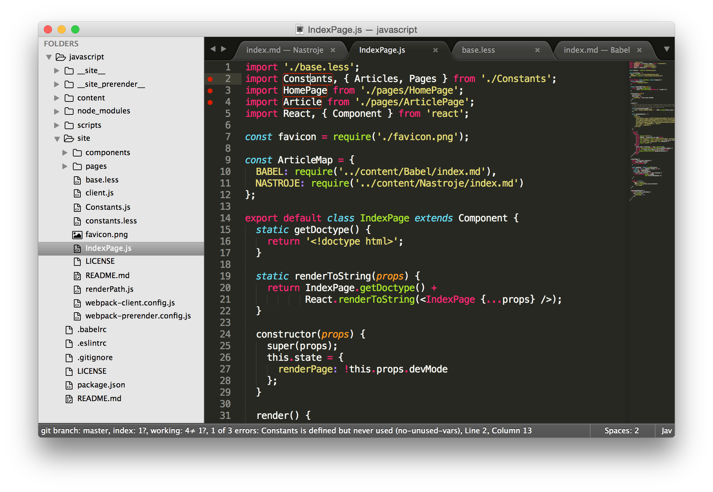
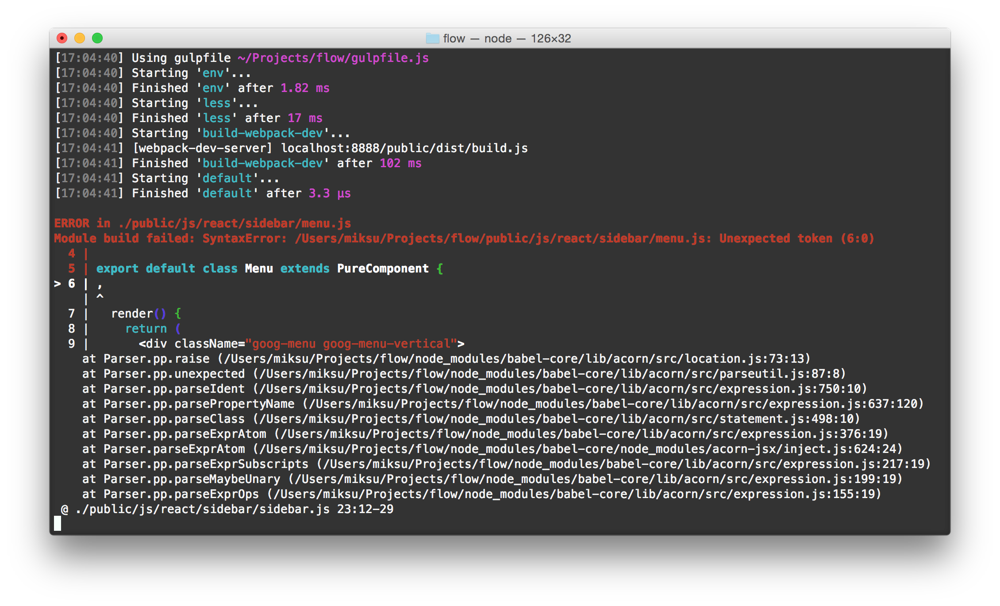
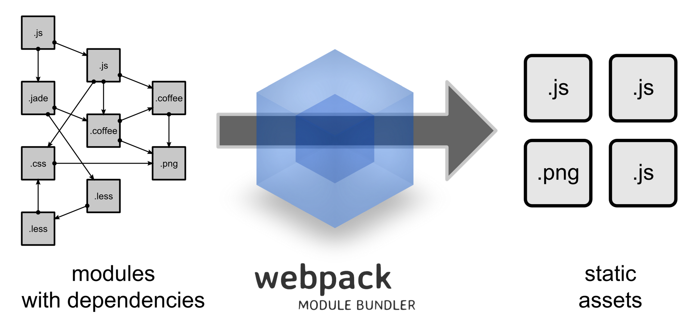

Nástroje
Tak jako truhlář potřebuje hoblík, pilu nebo nebozez, tak i vývojář webovek se neobejde bez pořádných nástrojů. Když si vyberete ty správné a naučíte se s nimi pořádně zacházet, značně usnadní a zrychlí vaši práci. V tomto článku se s nimi v rychlosti seznámíme.
Operační systém
Vezmeme to pěkně od základu a tím je operační systém. Nemá smysl chodit kolem horké kaše. Sami asi tušíte, že tím slonem v místnosti je Windows. Budete s ním pravděpodobně narážet na různé problémy (pramenící z node.js, npm, slabší podpory Facebooku v jeho opensource knihovnách...), které byste na OSX nebo Linuxu nikdy řešit nemuseli. Předem se tak omlouvám, pokud vám občas něco nebude fungovat. Články totiž primárně počítají s OSX (či Linuxem). Budu ovšem moc rád, pokud případné opravy či návody pošlete pull requestem.
Prohlížeč
Standardem pro vývoj je Google Chrome, který má dnes asi nejpropracovanější vývojářské nástroje. Otevřete je zkratkou ⌘+alt+j. Vůbec nejdůležitějším panelem je Console. Mějte ho pořád na očích. JavaScript vám do něj bude vypisovat všechny warningy a errory. Také si do něj můžete logovat hodnoty vlastní pomocí funkce console.log(...), která přehledně vypíše i komplikované datové struktury, což je fajn pro rychlé ladění.
Druhým nejužitečnějším panelem je Elements. Můžete v něm procházet a hlavně upravovat aktuální DOM strukturu a kaskádové styly. Změny se pak okamžitě projeví v okně prohlížeče. Hodí se třeba i pro ujištění, zda vám JavaScript vyrendroval nějakou komponentu a není třeba jen schovaná kvůli špatnému stylování.

Další panely už budete používat asi méně. Velmi šikovný je Networks, ve kterém si můžete přehledně například vyfiltrovat XHR requesty. V Sources pak můžete debugovat pomocí breakpointů. Doinstalovat si můžete i speciální panel pro React. Je podobný Elements, ale poskytuje i informace o stavu React komponent. Nicméně reálně ho moc nepoužívám.
V nastavení vývojářských nástroju si ještě zkontrolujte, že máte zaškrtnuté Enable CSS source maps a Enable JavaScript source maps. V našich projektech nebudeme používat přímo JavaScript, ale Babel, který se do něho překládá. Source mapa pak umožní prohlížeči namapovat řádky výsledného JavaScriptu na zdrojový Babel a my se tak dozvíme správný řádek a soubor, kde došlo k chybě. Obdobně to funguje pro CSS a preprocesory jako je LESS.
Web nakonec musíte samozřejmě pravidelně testovat i v ostatních prohlížečích. I ty mají vlastní vývojařské nástroje. Pokud se vám tedy stane, že vám něco nefunguje pouze ve Firefoxu, nebojte se je vyzkoušet. Jsou velmi podobné těm v Chromu.
Sublime Text
Zatímco mezi webovými prohlížeči moc na výběr nemáte, o dobré textové editory není nouze. Nemá smysl zde dělat nějaké dogmatické závěry. Někomu bude vyhovovat spartánský VIM a někdo má zase rád velké všeobjímající IDE. I tak se mezi JavaScriptovými vývojáři dá vypozorovat několik oblíbenců. Jedním z nich je editor Sublime Text. Momentálně ho používám jako svůj hlavní editor pro všechno.
Jeho největší předností je rychlost, jednoduchost, spolehlivost a obrovská paleta všemožných doplňků. Nevýhodou pak je to, že se jedná o one-man show projekt, který autor trochu zanedbává, nicméně nedávno se mu zas začal věnovat. Jak už to bývá, dobré věci nejsou zadarmo a tak vás licence vyjde na rozumných $70. Lze ho však nějaký čas používat a zkoušet zdarma. Nejvíce ho totiž oceníte až po nějaké době, kdy si zapamatujete různé zkratky a využijete tak jeho maximální potenciál.
Pokud se ho rozhodnete používat pro vývoj webovek, doporučuji si pro začátek stáhnout a nainstalovat tyto doplňky:
- All Autocomplete
- AutoFileName
- Babel
- EditorConfig
- Focus File On Sidebar
- Git
- Sidebar Enhancements
- Sublime Linter
V některém z dalším článku popíšu, jak a proč si nastavit ESLint neboli kontrolu kódu pro JavaScript (Babel) a JSX přímo v Sublime Textu.

Dalším editorem, který stojí za pozornost je Atom. Je to open source projekt, za kterým stojí GitHub a velmi připomíná Sublime Text. Má ale jeden problém a to je stabilita. Není zatím tak "uhlazený" jako ST a to je u nástroje, který používáte prakticky pořád, dost nepříjemné. Čas od času ho i přesto zkouším a jsou tam vidět velké pokroky. Také nad ním vznikají nové nástavby jako je Visual Studio Code od Microsoftu nebo Nuclide od Facebooku. Budoucnost Atomu vypadá zajímavě.
Hodně přívrženců pak má i WebStorm, PHPStorm a celá rodina editorů postavená nad IntelliJ. Pokud máte rádi velké plnohodnotné IDE, které už v základu lecos umí, tak rozhodně stojí za zkoušku. Na psaní kódu se dá ale používat prakticky cokoliv, takže se nebojte experimentovat.
Terminál
Svatou trojici pak uzavírá terminál. Prohlížeč, textový editor a terminál jsou tři věci, které musíte mít jako vývojář stále na očích. Kromě základní práce se soubory a Gitem z něho budete spouštět vývojový server, buildovat produkční verze a sledovat případné warningy a errory v kódu. Obzvlášť s používáním hot reloadu se většina hlášení bude objevovat právě zde a nikoliv v Console logu prohlížeče.

Node.js a Npm
O node.js jste už určitě všichni slyšeli. Jistého chytrého člověka napadlo vzít JavaScript runtime z Chromu a postavit nad ním velmi výkonnou platformu, která by se dala používat i mimo prohlížeč a to zejména na serverech. Tento nápad se setkal s obrovským ohlasem a pomohl odstartovat to pravé JavaScriptové šílenství.
Asi není překvapivé, že node se tak stává přirozenou volbou (nejen) pro aplikace, které závisí na velkém JS frontendu. Je totiž velmi výhodné používat stejný jazyk na obou březích. Můžete tak snadno sdílet části kódu (například validační pravidla či routing), či si předrendrovat stránku už na serveru a uživateli poslat rovnou hotové HTML. Navíc i pokud se rozhodnete stavět server nad jinou platformou, tak se nodu nevyhnete kvůli vývojářským nástrojům, které jsou téměř výhradně napsané také v JavaScriptu. Takže si ho prosím rovnou nainstalujte.
S nodem se vám nainstaluje i npm - balíčkovací manager. Jde o ultimátní a jednotné řešení pro sdílení kódů napříč JS ekosystémem. Původně byl určen pro prostředí nodu, ale nakonec se z něj stal i jednotný systém pro frontend vývojáře (R.I.P bower). Používá ho tak node, browserify, webpack, gulp, grunt, Angular, jQuery, React, prohlížeče ... prostě všichni.
Největší předností a odlišností NPM (například od Boweru) je to, že každý balíček může mít své vlastní závislosti (balíčky). Vzniká tak strom závislostí a není problém, aby v jednom projektu běžela jedna knihovna v několika verzích. Tedy, občas to problém být může. Například React bude dost nešťastný, pokud bude muset o správu DOMu bojovat s další instancí Reactu. Aneb vůči dependency hellu není a nebude zcela imunní žádný balíčkovací manager, ale NPM si v porovnání s konkurencí vede víc než obstojně. Dalším fundamentálním rysem je filosofie malých a jednoúčelových balíčků. Není tedy nic zvláštního, pokud je balíček pouze jedna několikařádková funkce.
Grunt
Se vší tou záplavou růných nástrojů, kompilátorů a linterů je potřeba se nějak vypořádat. Představte si, že byste po každé změně kódu museli vlézt do terminálu, najít změněný soubor, spustit nad ním Babel, poté ESLint a pak v prohlížeči ještě udělat refresh. To je přeci repetativní úkon, který se může zautomatizovat. Objevily se tak nástroje označované jako "task runnery". Velmi populárním byl (a stále je?) Grunt. Do projektu si přidáte Gruntfile, ve kterém si vše můžete nakonfigurovat. Konfigurace se skládá z jednotlivých tasků, které můžete pak volat v různém pořadí. Jednotlivé tasky (moduly) nemusíte psát sami, ale většinou je už najdete hotové na NPM. Jsou jich tisíce. Výsledek může vypadat třeba takto:
module.exports = function(grunt) {
grunt.initConfig({
jshint: {
files: ['Gruntfile.js', 'src/**/*.js', 'test/**/*.js'],
options: {
globals: {
jQuery: true
}
}
},
watch: {
files: ['<%= jshint.files %>'],
tasks: ['jshint']
}
});
grunt.loadNpmTasks('grunt-contrib-jshint');
grunt.loadNpmTasks('grunt-contrib-watch');
grunt.registerTask('default', ['jshint']);
};Postupně se však ukázalo, že cesta "vše konfigurovat" není úplně nejšťastnější. Bez dokumentace totiž nedáte ani ránu a pokud si nevystačíte s předem danými funkcemi, tak máte problém. Dalším problémem Gruntu je rychlost. Mezivýsledky si totiž ukládá do filesystému a u větších projektů s komplikovaným build procesem trvá dlouho (tohle už možná nejnovější verze nějak řeší).
Gulp
A tak přibyl mladší bráška Gulp, který se ponaučil z Gruntu a jde na to lépe. Konfigurace aka Gulpfile je JavaScript. Místo toho, abyste konfigurovali, tak programujete, což je velmi flexibilní a také odpadá nutnost spoléhat na dokumentace. Dalším zlepšovákem jsou streamy, které Gulp používá. Mezivýsledky si drží v paměti, vše běží paralelně a především citelně rychleji. Občas je však problém zkrotit tasky tak, aby běžely sekvenčně (verze 4.x tento častý problém adresuje). Tak jako Grunt i Gulp má dnes již téměř nekonečné množství pluginů. Grunt vs Gulp? Rozhodně Gulp. Pro názornost, "konfigurace" Gulpu může vypada třeba takto:
var gulp = require('gulp');
var coffee = require('gulp-coffee');
var concat = require('gulp-concat');
var uglify = require('gulp-uglify');
var imagemin = require('gulp-imagemin');
var sourcemaps = require('gulp-sourcemaps');
var del = require('del');
var paths = {
scripts: ['client/js/**/*.coffee', '!client/external/**/*.coffee'],
images: 'client/img/**/*'
};
// Not all tasks need to use streams
// A gulpfile is just another node program and you can use all packages available on npm
gulp.task('clean', function(cb) {
// You can use multiple globbing patterns as you would with `gulp.src`
del(['build'], cb);
});
gulp.task('scripts', ['clean'], function() {
// Minify and copy all JavaScript (except vendor scripts)
// with sourcemaps all the way down
return gulp.src(paths.scripts)
.pipe(sourcemaps.init())
.pipe(coffee())
.pipe(uglify())
.pipe(concat('all.min.js'))
.pipe(sourcemaps.write())
.pipe(gulp.dest('build/js'));
});
// Copy all static images
gulp.task('images', ['clean'], function() {
return gulp.src(paths.images)
// Pass in options to the task
.pipe(imagemin({optimizationLevel: 5}))
.pipe(gulp.dest('build/img'));
});
// Rerun the task when a file changes
gulp.task('watch', function() {
gulp.watch(paths.scripts, ['scripts']);
gulp.watch(paths.images, ['images']);
});
// The default task (called when you run `gulp` from cli)
gulp.task('default', ['watch', 'scripts', 'images']);Podrobnější porovnání Gulpu a Gruntu můžete najít i v pěkném článků na Zdrojáku.
Browserify
Node.js zavedlo do světa JS snadný způsob jak kód modularizovat. Takový modulární systém potřebuje dvě primární věci: možnost exportovat a importovat. Výše jste si mohli již povšimnout importování:
var gulp = require('gulp');Obdobný zápis v ES6:
import gulp from 'gulp';Výše uvedené zkusí prohledat /node_modules ve vašem projektu - místo, kam se vám budou ukládat balíčky z npm. Stačí zavolat npm install gulp --save a máte ho tam. Přepínač --save ho navíc přidá do seznamu v package.json. Běžně se totiž /node_modules adresář v Gitu ignoruje a tak je někde potřeba uchovávat seznam všech závislostí.
V /node_modules/gulp se pak import podívá do hlavního souboru daného balíčku a v něm najde export:
var inst = new Gulp();
module.exports = inst;To je vše pěkné, ale asi vás teď napadlo, jak to bude fungovat v prohlížeči? Nebude. Do prohlížeče můžeme jednotlivé skripty nahrávat pomocí <script> ... </script>, ale to nám moc nepomůže. Podobných souborů totiž budeme mít v projektu stovky až tisíce a posílat tolik HTTP requestů rozhodně nemůžeme. Také to nijak neřeší potřebu verzování, minimalizování a zapouzdřování. Tyto závislosti je tedy potřeba vyřešit už před releasem a uživateli posílat jeden výsledný soubor, ve kterém bude jen to, co skutečně potřebuje.

A tak vzniklo Browserify. Vezme váš kód a vyřeší všechny require a module.exports a vyplivne jeden výsledný soubor. JavaScript, který byl původně určen pro node.js, dokáže udělat kompatibilní pro prohlížeče. Poradí si například i s core node.js knihovnami. Nicméně to má samozřejmě jistá omezení. Například nemůžete pracovat s fs (filesystem). Velkým plusem je, že není potřeba nic konfigurovat - jednoduše to bude fungovat. Všechna magie se děje uvnitř. Ne nadarmo má ve znaku kouzelnický klobouk.
Webpack
Browserify funguje opravdu pěkně, ale i tak má přeci jen pár mušek. Řeší totiž jenom JavaScript a vše ostatní je potřeba doplnit spoustou gulp modulů. Navíc se ukázalo, že kromě JavaScriptu je potřeba podobně zpracovat i CSS (v praxi například LESS) nebo obrázky. To by nemuselo s Gulpem a jeho tisíci pluginy vadit, že? Bohužel Gulp má jednu zásadní slabinu, která plyne ze streamování. Neumí úplně přímočaře vytvořit z několika souborů jeden výstupní (s tím se umí lépe vypořádat např. undergroundovější task runner Broccoli). Je tak potřeba v gulp tascích řešit trochu nešikovně bundlování. A z toho zase mohou vznikat další obtíže, jako je správné odchytávání a zobrazování chyb. Dá se s tím poprat, ale budete cítit, že to není úplně ono.
Webpack na to jde úplně jinak, tak trochu proti filosofii celého JS ekosystému. Nedeleguje a nevyčleňuje jednotlivé funkce do více modulů a tak už v základu představuje velmi mocný nástroj. Nástroj, který byl od počátku zamýšlen tak, aby nám vývojářům co nejvíce usnadnil práci. Základním stavebním kamenem jsou loadery. Každý formát má vlastní a může jít téměř o cokoliv (.js, .css, .less, .coffee, .png...). Webpack pak přetíží require() volání a můžete ho použít třeba i pro markdown dokumenty (jako tato stránka). Následně pak funguje podobně jako browserify, tedy vyřeší závislosti a sestaví build, ve kterém je jen to potřebné.

Oproti browserify je potřeba ho nakonfigurovat, což není úplně jednoduché. Na druhou stranu, jakmile to jednou uděláte, získáte velmi mocného společníka. Konfiguraci navíc můžete z velké části obšlehnout. Poskytuje také jednu killer funkci, kterou browserify nemá a pro kterou se vyplatí na něj z browserify přejít a tím je hot module replacement. Dokáže nahradit a zpracovat modul, aniž by bylo potřeba refreshovat celou stránku (a modul může být javascript, less nebo markdown!). Bez jakýchkoliv dodatečných pluginů v prohlížeči. Pouze čistý JavaScript! To ohromně zefektivňuje vývoj.
Dobré je také zmínit, že kdykoliv můžete velmi snadno přejít z browserify na webpack (bez úprav zdrojáků). Udělal jsem to nedávno u projektu s 10 000 řádky kódu a 70 npm moduly bez jediné upravy mimo konfiguraci webpacku a gulpu. Naopak už to vždy jít nemusí (pokud například budete specifikovat loadery inline přímo v require voláních).
ESLint
Lintování je levný způsob, jak zlepšit stav zdrojáků napříč větším projektem či týmem několika programátorů. Hlídá totiž styl, jakým kód píšete a tak musí všichni stejně odsazovovat nebo používat závorky. Pravidla, podle kterých se řídí, si samozřejmě můžete libovolně nastavit. Nebude vám podstrkovat nějaký svůj styl. Krom toho, že hlídá úhlednost a jednotnost kódu, tak vám leckdy pomůže odhalit i různé překlepy či nepoužíváné importy. ESLint je poměrně nový JS linter (2013), který si vzal ponaučení z JSHintu a je kompletně modulární. Můžete si do něj tedy přidávat různé doplňky. Například se vám bude jistě hodit podpora React JSX či Babelu. Lintování si můžete nainstalovat přímo do svého editoru a zároveň ho přidat i do build procesu, což je taková případná obrana před vývojářem, který by se rozhodl pravidla porušit.
Závěrem
Tento článek byl především seznamovací a většina z vás v něm asi nenalezla mnoho nového. I tak je ale důležité udělat alespoň rychlý přehled o různých nástrojích a technologiích, které se dnes používají. V JS světě se budete neustále potýkat s tím, že žádná řešení nejsou ultimátní a i ta, která jsou zrovna na špici, mohou za půl roku upadnout zcela v zapomnění. A tak tu máme několik kvalitních prohlížečů, editorů, task runnerů, bundlerů, linterů a dokonce i "JavaScript jazyků".
Ale nebojte, příště už to bude rozhodně zajímavější! Vyhrneme si rukávy a pustíme se konečně do práce. Ukážeme si, jak to vše poskládat dohromady a napíšeme si první React komponentu!